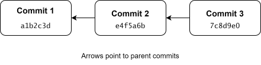

3 Inspecting the commit history
In the previous chapter, we briefly introduced git log. In this chapter, we will explore how to inspect the commit history of a repository and examine individual commits.
3.1 Checksums
To understand how Git identifies commits, we first need to introduce the concept of checksums.
A checksum is a value calculated from data, such as the contents of a file. By default, Git uses the SHA-1 hashing algorithm to calculate checksums. The algorithm produces a 40-character hexadecimal string from the data. For example, the SHA-1 hash of the string “hello world” is:
2aae6c35c94fcfb415dbe95f408b9ce91ee846ed
Adding a single space to the end of the string produces the following hash:
0b1f51a2c85a69ee1335df4eef69342169bd195b
Notice that even a minor change to the input can produce a completely different hash.
Git uses checksums to identify objects stored in its internal database, including commits. When calculating the hash of an object, Git includes the object’s type and size along with its contents. Because accidental hash collisions are extremely unlikely, these hashes can be treated as unique identifiers for practical purposes. The hash identifying a commit is called its commit ID.
3.2 Contents of a commit
A commit represents a snapshot of the repository based on the contents of the staging area at the time the commit was created. A commit also contains information about its author, the time it was created, a commit message, and references to its parent commits. The first commit of a repository does not have a parent commit. These references to parent commits connect the commits into a history.
TODO: Is the first sentence above correct enough or just misleading? The content of the snapshot depends on the content of the index, not the files in the repository?

3.3 Inspecting commit history with git log
To illustrate how to inspect the commit history of a repository, we first create a Git repository containing a single file, file.txt, and make two commits:
$ mkdir ~/example-git-log $ cd ~/example-git-log $ git init $ echo "Changes in first commit" > file.txt $ git add file.txt $ git commit -m"First commit" $ echo "Changes in second commit" >> file.txt $ git add file.txt $ git commit -m"Second commit"
Running git log now produces output similar to the following:
$ git log commit bd1a5e136e4acd10d16fe0e4a6199dc42b7abbed (HEAD -> main) Author: Your Name <your@email.com> Date: <Date and time of commit> Second commit commit ad3facc8ab413488c4195b6c39b6bd8ce89d1a40 Author: Your Name <your@email.com> Date: <Date and time of commit> First commit
By default, git log shows the history leading up to the current commit, starting with that commit and working backwards through its history. For each commit, Git displays the full commit ID, the author’s name and email address, the commit date, and the commit message. The output also shows HEAD, which normally refers to the current branch and therefore identifies the currently checked-out commit. We will explain this in greater detail later in the tutorial.
The default output of git log is quite verbose, and we are often interested only in the commit IDs and messages. We can use the --oneline option to show this information more concisely:
$ git log --oneline bd1a5e1 (HEAD -> main) Second commit ad3facc First commit
Notice that git log --oneline displays abbreviated commit IDs, rather than the full 40-character IDs. Git automatically chooses an abbreviation length sufficient to distinguish objects in the repository. These abbreviated IDs can also be used to refer to commits in Git commands.
3.4 Inspecting individual commits with git show
We can use git show <commit-id> to inspect an individual commit. For example, we can use git log --oneline to find the ID of the first commit and then inspect it using git show:
$ git log --oneline bd1a5e1 (HEAD -> main) Second commit ad3facc First commit $ git show ad3facc commit ad3facc8ab413488c4195b6c39b6bd8ce89d1a40 Author: Your Name <your@email.com> Date: <Date and time of commit> First commit diff --git a/file.txt b/file.txt --- /dev/null +++ b/file.txt @@ -0,0 +1 @@ +Changes in first commit
git show displays the same basic commit information as git log, but also shows the changes introduced by the commit. We will learn how to interpret this output in the next chapter.
3.5 Summary
In this chapter, we explained how Git uses checksums to identify commits and how each commit represents a snapshot of the repository, together with metadata and references to its parent commits.
We then learned how to inspect the commit history of a repository using git log, and how the --oneline option provides a more concise overview. Finally, we introduced git show, which allows us to inspect an individual commit and the changes it introduced.
3.6 Exercises
Exercise 1 - Inspecting commit history
In this exercise, you will practice the commands introduced in this chapter. Note that your commit IDs will almost certainly differ from those shown in the solutions.
1. Set up a repository.
Create a directory named
ex01-git-login your home directory.Create an empty file named
file1.txtand commit it.Create an empty file named
file2.txtand commit it.
2. Display the commit history.
Display a concise commit history in the terminal.
3. Compare commit IDs.
Compare your commit IDs with those shown in the solution to Step 2. Are they identical? Why or why not?
4. Identify the relationship between the commits.
What is the relationship between the two commits in the repository?
5. Show information about a commit.
Use an appropriate Git command to inspect the first commit.
6. Limit the number of displayed commits.
A repository’s commit history can become very long, and sometimes we only want to view the most recent commits. Consult the git log documentation to find an option that limits the number of displayed commits. Use this option to show only the most recent commit.